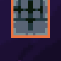
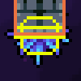
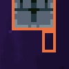

第一届蔚蓝制图小测(总分: 202  )
)
出题组: 底龙, ShadowRo, Lucky_boy
本次考试没有监考老师, 请同学们不要交流打闹, 诚信考试, 不要作弊, 考试时间为 2h
请大家携带好本次考试提神醒脑的好伙伴
, 携带后, 他会在你作弊的时候将你回溯至考试开始, 并使你能获取的最大分数值降低 10
叮铃铃 ...... 同学们, 考试现在开始! 请大家仔细阅读试卷上的题目和答题要求, 合理安排答题时间。遇到难题不要慌张, 可以先跳过, 等做完其他题目后再回来思考

注意
考虑到国内 Coder 的稀缺性, 这里并没有将 Coder 送上 ban 位, 但仍希望 Coder 以 Mapper 的思维回答问题, 不要降维打击鸭!
一. 单选题(总分 80 , 一题 5 )
1 使用 Bird Path 实体时, 我们需要额外小心放置的节点数量, 算上头节点跟子节点, 总共需要多少个游戏才不会崩溃?

| A. 3n | B. 3n + 1 | C. 2n + 1 | D. 3n + 2 |
2. 心门既是一种演出道具, 也是一种即将迎来更大挑战的警告, 但是最近一位群友遇到了心门无法打开的问题, 请问下列选项中最不可能的原因是?
| A. 收集的水晶之心数量不够 | B. 玩家处于心门右侧 | C. 玩家离心门太远 | D. 心门太胖了, 距离判断失效导致不开门 |
3. 当你放置了红绿灯 A, 并在它的上面叠了一个红绿灯 B, 你在他俩上面放了一个刺, 刺会吸附到?
| A. 红绿灯 A 上面 | B. 红绿灯 B 上面 | C. 都吸附失败 | D. 会额外生成一个刺, 各吸附一个 |
4. 当使用 Parallax 背景并设置了 flag 和 Fade In, 开启 flag 后背景会淡入, 但如果此时关闭了 flag 会发生?
| A. 背景正常淡出 | B. 背景直接消失 | C. 取决于其他设置 | D. 钝角 |
5. 众所周知, 当房间中存在 SummitBackgroundManager 实体且玩家位置高于此 controller 时, 玩家会进入一个炫酷的上升过场(如图), 最终以 240px/s 的速度尝试进入上方的房间, 这意味着两个房间的建议间距为 0 ~ 3 格, 与此同时, 我们还要考虑下一个房间的布置以防卡死, 请问下列选项中哪一种是正确的布置?

| A. | B.  |
C.  |
D.  |
6. 中华古诗词是中国优秀传统文化之一, 在优质国产地图《万家灯火》中存在以下贴图元素, 呈现了诗句: “奔流到海不复回”, 但图示 decal 摆放并不规范, 请问应该按照以下哪个 Loenn 快捷键顺序调整 decal 位置, 使其合乎中国传统诗句的阅读顺序?

| A. L, R, H, R | B. R, H, L, L | C. H, R, L, R | D. R, R, H, L |
7. 我在 Loenn 中放置了一个实体并保存了, 但是游戏中并没有出现我的实体, 原因几乎不可能是?
| A. Loenn 抽风了 | B. Everest 抽风了 | C. 实体对应的 Helper 未启用 | D. 实体配置错误, 实体加载失败 | E. 加载了, 但是单纯没看到 | F. 我以为我保存了 |
8. 在 Loenn 中搜索不到对应 Helper 实体的原因几乎不可能是?
| A. Mod 还未下载 | B. Mod 还未更新 | C. Mod 下坏了 | D. Loenn 还在加载对应 Mod | E. 刚下的 Helper, 还未重启 Loenn |
9. 在打包完 Mod 准备发布后, 别人发现游戏里找不到你的图的原因几乎不可能是?
| A. Mod 文件夹结构错误 | B. 未在 Mod 根目录配置 everest.yaml |
C. 别人缺少对应依赖 | D. 地图路径错误, 被别的 Mod 覆盖 |
10. 游戏崩溃的原因几乎不可能是?
| A. 刚更新 Helper, 新鲜的 bug | B. 刚更新 Everest, 新鲜的 bug | C. 没更新 Helper, 老旧的 bug | D. 没更新 Everest, 老旧的 bug | E. 实体使用方式错误 | F. Mapper play 的一环 | G. 加拿大人往你的电脑里安装了大炮! |
11. 我们常常在蔚蓝音乐相关的知识中听说过 Layer 这种概念, 请问在下列房间选项中, Music Layer 的含义是什么?

| A. 是否禁用或启用对应的音轨 | B. 是否将 fmod 里对应 event 的 layer 参数设置为 0 或 1 | C. 是否将对应的音轨的音量设置为 0 或 1 | D. 是否禁用或启用 fmod 里对应 event 的 layer 参数 |
12. 如果你在作图过程中发现自己的实体变成了下面这样, 最不可能的原因是?

| A. 实体本身就没有材质 | B. 实体不再被 Helper 支持 | C. Loenn 读取问题 | D. 实体配置文件出错 |
13. 由于蹭墙跳作为一个极难的技巧, 我们常常需要为它做额外的处理, 以提供更多的容错, 请问下列选项中, 哪种做法是不推荐的?
| A.  | B.  |
C.  | D. (隐形单向板) |
14. 请问下列实体中, 哪一个能做到持续遮挡人物的效果, 而且能融入周围的砖?
| A. Fake Wall | B. Fake Block | C. Coverup Wall | D. Exit Block |
15. 镜头在蔚蓝中起到了非常重要的作用, 情绪的表达, 路线的引导, 更开阔的视野都离不开它,请问当玩家触碰到 Camera Offset Trigger 将相机偏移设置为 (1, 1) 时, 此时相机中心相对人物位置偏向哪里?
| A. 左上 | B. 右上 | C. 左下 | D. 右下 |
16. 在 9a 中, 官方通过 RumbleTrigger 来使 CrumbleWallOnRumble 依次碎裂, 增强了游戏的画面表现力, 请问这个碎裂的顺序是?
| A. 按 Loenn 内的摆放顺序 | B. 完全随机 | C. 从左往右 | D. 从上往下 |
二. 填空题(总分 42 , 一题 3 )
1. 蔚蓝的 log.txt 存放在 ______ 路径下
2. 蔚蓝的 Mod 加载器叫 ______, 蔚蓝的 Mod 管理器有 ______, ______
3. 理解英文单词的缩写有利于提高 mapper 之间的交流效率, 就比如 gp 和 deco 在日常交流中常常表示 ______ 和 ______
4. 蔚蓝的默认房间大小为 ______ x ______(填数字, 单位 px)
5. 设置 flag 的方式: ______, ______(至少两种)
6. 显示碰撞箱的方式: ______, ______(至少两种)
7. 游戏内更新 Mod 失败原因: ______, ______(至少两种)
8. 默写草莓 idle 动画第一帧图片对应的路径, 从 Graphics/ 开始 ______
9. 官方 .xml 文件存放在 ______ 文件夹下(从游戏根目录开始), Sprites.xml 的社区规范路径为 ______(从自己 Mod 根目录开始)
10. 在 Loenn 中, 添加节点的快捷键是 ______, 实体或者贴图左右翻转的快捷键是 ______
11. 地图背景的循环由 ______ 和 ______ 属性控制
12. 请默写灰砖的英文名 ______
13. 当你使用 bits & bolts 提供的全局房间功能时, 全局房间的房间名必须包含前缀 ______
14. 蔚蓝的人物音效主要用到了 Fmod 中的 ______ 技术
三. 判断题(总分 30 , 一题 1 )
1. 我们无法进入一个没有重生点的房间
2. 在地图同路径创建同名 .meta.yaml 文件即可使用拓展镜头的功能
3. 在原版游戏中, 我们可以通过替换 Dialog 文件来替换所有的官图文本
4. 我们可以将我们的 Sprites.xml 直接放置在 Graphics/ 文件夹下, 只要里面的 xml id 不跟官图和其他 Mod 图里的 xml id 重复即可
5. 当你有顺着 Trigger Spikes 的速度时, Trigger Spikes 并不会被触发
6. 显示玩家轨迹是 Loenn 的固有功能
7. 左右翻转的快捷键总是有效果
8. 我们可以使用 CelesteTAS 提供的 Ctrl + B 快捷键来查看游戏中的各种碰撞箱, 方便制图
9. 我们可以使用 Speedrun Tool 提供的 SL(快速保存和加载) 方便测试游戏的 GP
10. 如果你的镜头运动到了非预期的位置, 需要警惕场景中可能存在的 Badeline Boost
11. 发布 Mod 时, 我们需要将everest.yaml 层级的文件打包到 .zip 中, 而不是 Mods/ 文件夹下自己的 Mod
12. 我们必须使用 Sublime 文本编辑器来打开 everest.yaml
13. 在原版中, 官方通过 DecalRegistry.xml 来为 decal 添加其他额外的效果, 比如给云添加了视差, 给烟囱添加了烟雾, 给 Dash Block 添加了裂纹
14. 我们可以通过 SMH+ 修改人物/实体皮肤中的方方面面
15. Foreground Decals 和 Background Decals 除了深度不同, 并没有本质区别
16. 在 Loenn 中, 素材路径中的正斜杠 / 写成反斜杠 \ 可能导致路径解析错误
17. 在月亮块, 红绿灯, Swap Block 旁边放上原版的单向板, 单向板都会自动吸附上去
18. 在 DashBlock 上放置一排原版 Spikes, 在 DashBlock 被撞碎后, 刺不会跟着被销毁
19. 使用 BadelineBoost 时最后一个节点处 Badeline 会大抛, 其他位置 Badeline 会小抛
20. 大部分官图实体都可以不借助 Helper 更换材质
21. 当你把两个月亮块放在一起, 它们会连起来, 但本质还是两个月亮块, 所以如果此时提着 TheoCrystal 刚好碰到它俩的交界处, 可能导致意外的挤死
22. 水平移动的平台不会给你提供机关加速
23. 我们在 7a 最后上升段会经过不断倒数的记录点 Summit Checkpoint, 触发它们只是视觉效果, 它们并不会自动帮我们把重生点刷新到最近的
24. 在 Sprites.xml 里我们可以修改携带抓取物时的抓取物高度偏移量, 所以使用有些皮肤 Mod 可能会影响到游戏机制
25. 9a 的黑洞背景位置会随风向改变
26. 若我们要实现 4a 大雪纷飞的效果, 使用 Wind Pattern Trigger 改变风向/风力即可
27. 7a 上升段所使用的 Kill Box 会使你在与其接触后直接死亡
28. 金草莓在放置后, 出现的必要条件之一是完成一次关卡, 同时在玩家通关的时候会自动收集
29. Badeline Boss 处于房间外时不会攻击
30. 若要实现官图中草莓籽合成草莓的效果, 只需在场景中放置若干草莓籽即可
四. 实验题(总分 50 , 一题 5 )
同学们, 接下来是上机部分, 请大家领取好各自的地图文件以进行接下来的作答
接下来的五题分别对应 a-01 ~ a-05 房间
1. 请利用 Camera Offset 调整 a-01 房间的镜头
2. 请调整圆刺来优化这些基础操作的细节
3. Camera Offset Border 可以把镜头限定在一个区域, 并且可以被 flag 控制, 这是画游中默城的倒一, 这里的镜头被我魔改导致出现问题, 请找出问题所在并作出修改
4. One-Way Camera 则可以限定 Camera 只能在某个方向移动, 请在下方已经摆好的镜头 Trigger 中调整设置, 来让镜头变得流畅自然(无需改动 flag 和 invert 设置)
5. 在这里我们需要传送进入隔壁 a-05 (1), 但是有笨蛋乱改了设置, 请你修复传送中出现的所有问题
请打开 b-01, 其设定路线已经附在以下视频中, 根据指示实操以下五题, 修改越少, 得分越高!
6. 请不利用任何其它作弊手段完整操作出 a-01 设定路线, 证明你有足够的底力来进行接下来的测试
7. 请打开 b-01 (1) 房间, 很明显, 摆刺后这里的细节做的并不是很好, 请你尝试调整蓝色 Spinner 的位置以增加容错。
8. 测试人员发来了一个偷鸡, 偷掉了你的预输入, 请在 b-01 (2) 房间中利用 Spikes 实体杀掉视频中的鸡
9. 也许, 在尽量少改动 gp 的前提下, 下面可以多出一条草莓路线? 请在b-01 (3) 房间内适量修改右侧 Falling Block 及其 attached 的紫色圆刺和尖刺来设计通向右下的路线
10. 你也许注意到了, 在玛德琳预输入左下冲后, 当你触地时, 仍有 2 帧弹簧带来的 ForceMove 导致你只能向左 hyper, 请在 b-01 (4) 中，只利用 FallingBlock, 消除这 2 帧 ForceMove 带来的不利影响(允许修改 Fgtiles)
答案
一. 单选题
1
C
因为 bird path 需要使用贝塞尔曲线, 所以从第一个节点开始, 每次往后必须多两个节点才够构造这个曲线, 不然找不到点就会报错
2
D
- A: 数量不够怎么开
- B: 代码是这么写的
- C: 正确的
- D: 没关系
3
A
更新顺序问题, 先加载的实体会先把刺占了
4
B
因为本来就没有 Fade Out 设置, 所以如果没 flag 就是直接消失, 如果你想做 Fade Out 效果并设置 Fade In/Out 的持续时间, 请使用 MaxHelpingHand/StylegroundFadeController
5
C
- A: 如果什么都不放的话玩家会不断下坠, 且速度会越来越大(不过如果有幸落到砖上还有救x)
- B: 会卡死
- C: 正常落地
- D: 也会卡死(留两格缝隙就不会卡死了)
6
B
先逆时针旋转, 再水平翻转(一个 L 和一个 R 可以相互消掉不看, H/V 同理), 由于是像素字比较难辨认, 所以这里盯住到这个字会看的清楚一点
7
A
Loenn 抽风的概率其实比较小(完全没见过), 反倒是 Everest 热更突然坏掉也是有可能的,
建议使用 Ctrl + F5 快速重启游戏看看实体是否出现, 虽然大概率是你猪了哪里弄错了
8
D
一开始 Loenn 的 Loading Logo 跑完就算加载完了, 反而是刚下的 Mod 确实需要重启一下 Loenn 让它重新看一下 Mods 文件夹里的各种 Mod
9
B
未配置 everest.yaml 只会导致别人更容易缺依赖, 或是影响后续你 Mod 的流通, 并不会导致你的图无法加载
也就是能进你的图, 但是发现你摆的实体什么的都不见了, 因为极大概率人家根本没开那些 Mod
10
G
11
B
12
C
13
C

14
C
- Fake Wall: 隐藏墙壁, 进入后自动淡出, 能融入周围的砖
- Fake Block: 隐藏墙壁, 进入后自动淡出, 不能融入周围的砖
- Coverup Wall: 镂空墙壁, 进入后不会自动淡出, 能融入周围的砖
- Exit Block: 实心墙壁, 在玩家离开后会现形, 能融入周围的砖, 适用于阻挡玩家返回
15
D
蔚蓝坐标系 x 轴朝右, y 轴朝下
16
B
纯随机, 小子!
二. 填空题
1
2
3
- Gameplay: 通关当前地图所需的技巧, 常常泛指广义上的操作, 即操作的衔接流畅程度, 组合丰富程度, 实体复用程度等等
- Decoration: 指游戏内的装饰, 常常泛指各种 背景 Stylegrounds, decal, 光效等视觉上的装修要素
4
- 320 px
- 184 px (镜头高度 180 px)
5
- 使用 Flag Trigger
- 使用 Mapping Utils
6
- 按键盘上的波浪键
~ - 下载并启用 Celeste TAS, 按下
Ctrl + B
7
- 单纯是网络问题
- 你开着 Loenn, Loenn 占用了文件
8
Atlases/Gameplay/collectables/strawberry/normal00.png
9
Celeste/Content/Graphics/MyMod/Graphics/MyMod/Sprites.xml(没撞路径即可得分)
10
nh
11
Scroll XScroll Y
12
Crumble Block
13
14
三. 判断题
1
F
我们可以通过传送 Trigger 进入
2
F
我们需要额外在 .meta.yaml 中填入以下内容, 参考
yaml ExCameraMetaData: EnableExtendedCamera: true RestingZoomFactor: 1.0
3
F
4
T
Sprites.xml 撞路径本身没有错, 错的是如果你覆盖了官图或者别的 Mod 图 的 xml id 会影响到他们, 所以只要 id 不重复路径想撞就撞
5
T
代码是这么写的🤓
6
F
是插件
7
F
并非总是有效果, 得看 coder 有没有做对应的功能, 而且除了 decal 很多东西并没有高频的翻转需求
8
T
对的对的, 看碰撞箱这功能真的很好用
9
T
不要用 SL 做了张自己都打不过的大粪图😡
10
T
勾选 Badeline Boost 的 Lock Camera 选项可能导致这种问题
11
T
不然文件夹结构就多套了一层了
12
F
Sublime 只是文本编辑器而已, 你用记事本也是一样的
13
F
具体原因参考
14
T
SMH+ 虽然有点复杂, 但功能确实强大
15
T
应该是送分题吧
16
T
你是不是偷懒在资源管理器上面复制粘贴了🧐
17
F
只有月亮块能吸住单向板, 其他两个都不行
这个解释起来比较复杂, 简单来说对于这些实体, 如果要发生吸附(Attach)这个动作, 必须满足三个条件
- 要去吸别人的实体需要有吸的功能
- 要被别的实体吸的实体需要有被吸的功能
- 吸和被吸的实体要贴贴
对于绝大多数你可以踩上去的物块(这被称为 Solid), 他们都有吸附功能(例如月亮块, 红绿灯), 对于绝大多数你可以单向穿过的实体(这被称为 JumpThru), 也有吸附的功能(例如移动平台)
对于刺这种实体, 它具有被吸附的功能, 所以你会发现, 刺不管怎么放, 基本上都是能被吸到某一个东西上的
然后就是一些特殊情况, 比如单向板其实并没有吸别人或者被吸的功能, 所以单向板被月亮块吸住单纯是月亮块自己特殊处理了, 而且此时往单向板上放刺也粘不住
如果你要让单向板拥有吸/被吸的功能, 可以试试自定义的单向板, 比如
VortexHelper/AttachedJumpThru
18
T
虽然 Spikes 被 DashBlock 吸附了, 但是 DashBlock 并没有处理吸附物的销毁状态, 所以如果你需要在 DashBlock 撞碎后顺便销毁吸附物, 可以试试自定义的 DashBlock
19
T
所以一般我们都是给 Badeline Boost 创建多个节点, 然后最后一个节点放房间外面
20
T
你可以使用 Sprites.xml 来更换大部分原版实体的材质, 更详细的换肤教程请看
21
T
就是这样
22
T
代码里没写(即答

23
T
是会的😱
24
T
25
T
又是一个小细节
玩家平时注意不到的点 mapper 其实都考虑到了
26
T
Wind Pattern 只管物理上的风力, 视觉效果上需要同时使用 Snow 等背景才可以生效
27
F
官方这个 Kill Box 的意思其实是在你到达它上方一定距离后会一直保持激活状态, 到达它下方一定距离后会一直保持未激活状态, 只有在激活状态下你碰到了 Kill Box 才会死亡, 这样就给人营造了上去不死掉下来死的感觉
28
F
在放置了金草莓后, 若开启了 Cheat Mode(序章彩蛋), 则金草莓一定会出现, 否则金草莓出现的必要条件为
- 没有死过或者只在金草莓房间及其前面的房间死过
- ABC 面都已解锁或者开启了 Debug 模式(一般在 Mod 设置中常开, 所以没有 BC 面也没事)
- 至少通关过一次地图(初见金吗, 你这家伙)
同时什么时候收集金草莓也是要我们自己控制的, 我们需要放置 GoldenBerryCollectTrigger 让玩家触碰后才收集金草莓
29
T
同时建议将最后一个节点放置在房间外, 防止玩家在最后一个节点触碰到 Badeline Boss 发生意料之外的错误
30
F
放一个草莓然后按 n 加节点就是草莓籽草莓了
四. 实验题
所有答案都可以在地图文件里找到(以 answer 为后缀)
7
【评分标准: 仅修改 1 个刺 = 5 分, 2 个 = 3分, 3 个 = 1 分, 4 个/调整位置错误 = 0 分】
8
【评分标准: 中间六格放刺 = 5 分, 左边弹簧那里刺填满扣 0 分】
9
【评分标准: 完全不改图 = 5 分, 其他情况能过就有 3 分, 完全过不了 0 分】